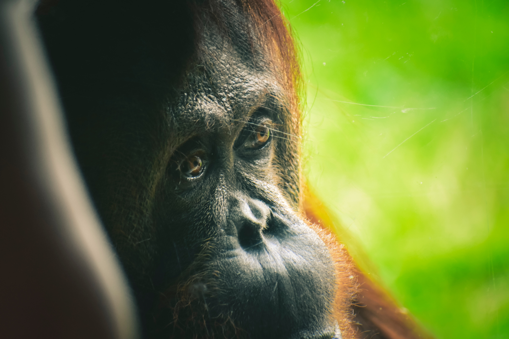
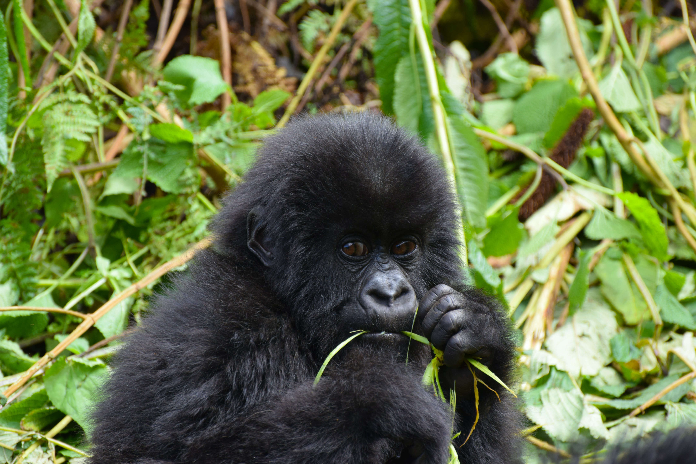
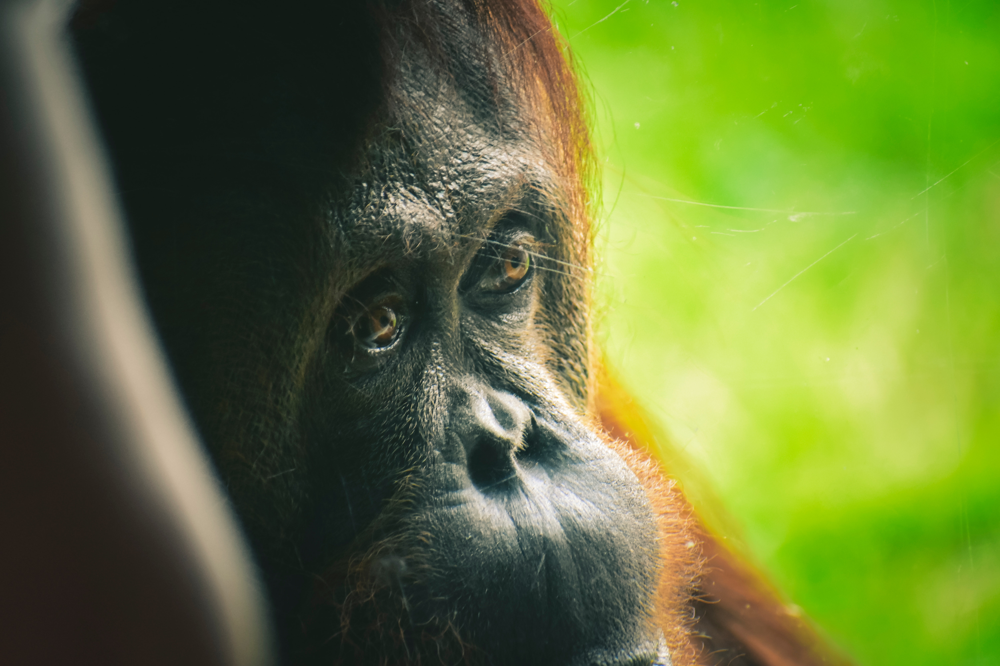
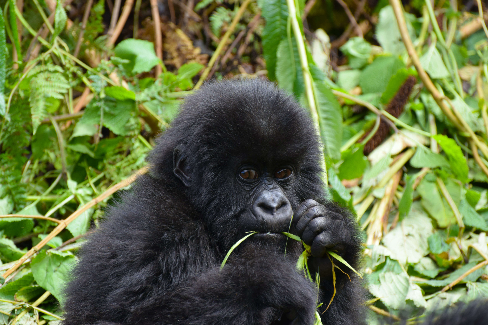
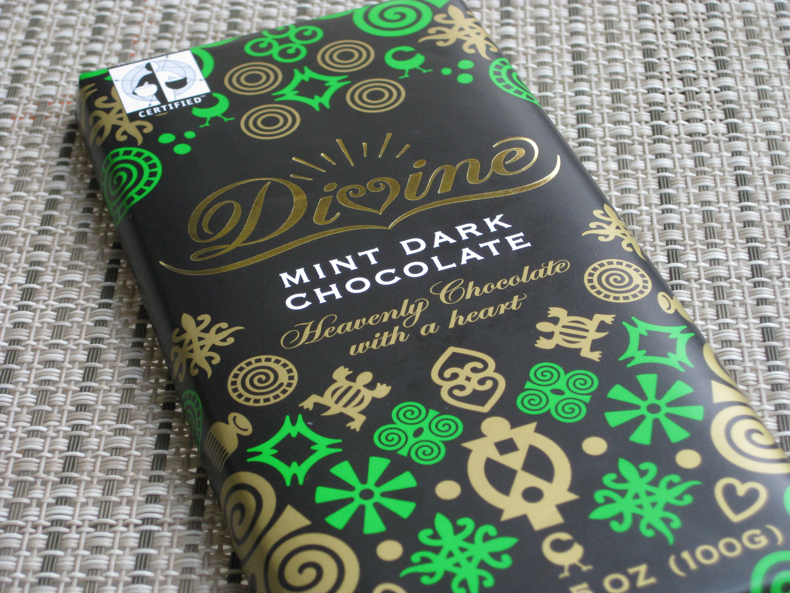
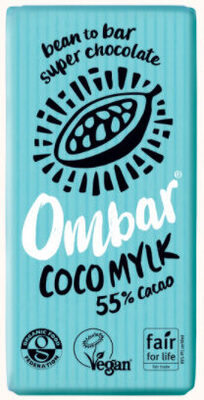
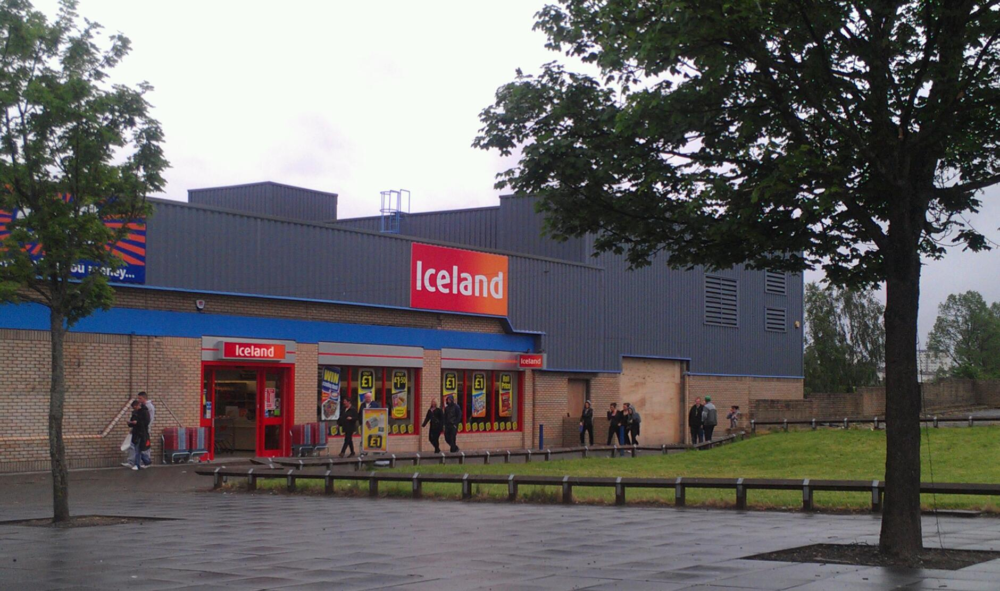

Here is a short summary of some of the things that you can do to help save the apes. However, if you would like to learn some more in-depth information, click on one of the images, or read on below.
 



Below is a more in-depth explanation of some things that you can do to help save the apes. If you would like to learn more about one of the points just mentioned, click on one of the images above. Alternatively, if you would like to learn more about the dangers facing great apes, visit the Dangers Facing Great Apes page.
• Aviod products made from unsustainable palm oil. Palm oil is often needlessly used in common household products. This has meant that companies have commited mass deforestation in order to create space for palm oil plantations. This has resulted in orangutans losing their homes. However, through buying sustainable palm oil, we can pressure companies to stop unethically sourcing their palm oil, and to start caring more about the creatures in out environment. In order to find out if a company uses sustainable palm oil, there are three things that you can do:
1) If a company only uses sustainable palm oil, they will often have information regarding this on their website. If you are not quite certain, or it doesn't say, try method 2.
2) Look for the RSPO label on products. The RSPO (Roundtable on Sustainable Palm Oil) is a 'not-for-profit that unites stakeholders from the 7 sectors of the palm oil industry [...] to develop and implement global standards for sustainable palm oil'. If a product has an RSPO label, it most likely uses sustainable palm oil.
3) If a product does not have the RSPO label on it, you can use their website Membership search to check if a company is a member.
If a product does not have any information regarding palm oil usage on their website, does hot have the RSPO label, and isn't an RSPO member, you may want to consider using another, more palm oil friendly product, as it is possible that this product uses unsustainable palm oil.
Here is a list of some companies/products that use sustainable/no palm oil in:
Here are some photos of the shops of/products made by the companies mentioned:
  • Support charities such as WWF and Sumatran Orangutan Society. Through supporting these organisations, your money could go towards 'buying veterinary supplies to safely evacuate an orangutan in danger' (a quote from the SOS Sumatran Society website) or 'training rangers to detect and safely remove snares set for other animals, which can often severely injure or kill gorillas'(a quote from the WWF website). Donations are another vital way that ape populations are kept high.
Here is a list of some organisations that you might want to support:
• If you are still in school, you could:
• Support charities via Adopt an Animal. This can be especially fun for children and is a more interesting way of supporting a charity. This is because when participating in these schemes, you will often recieve updates, newsletters, photos, and a cuddly toy.
If you are interested in supporting a charity through Adopt an Animal, here are some groups that do this:
• Go on a trek to see mountain gorillas. Whether it’s in Rwanda, Uganda or DR Congo, tourism is a big reason that governments have stopped people from using gorilla habitats for agriculture. In order to go gorilla trekking, you need to buy a permit. The profits that are earnt from selling these permits means that the land can be more useful when it is being used as a habitat for gorillas. This means that by going on one of these treks, you are supporting the gorillas by keeping their land useful to organisations, and so protected. As well as this, due to the fact that gorilla treks bring in lots of money for companies, more money is spent on protecting these animals from poachers. On top of this, not only are you helping to keep gorillas safe, you get to have a fun and amazing experience that you’ll never forget!
If you are interested on going on a gorilla trek/safari, here are some groups that organise this: